You're about to embark on one of Sherlock Holmes' adventures.
Here, you will read Dr John Watson's account of the curious matter of the Blue Carbuncle.
However, you will do more than just reading. In fact, as you move on with the story, you will help England's
most famous detective solve this case. Read on to know how.
'The game's afoot!' You can already hear Sherlock Holmes' shout of delight as this new case starts.
Press the button whenever you're ready to shout it with him.
I had visited my friend Sherlock Holmes upon the second morning after Christmas,
with the intention of wishing him the compliments of the season.
He was sitting by the window, a steaming cup of tea in his hands. Close by him lay a worn and dirty
hat he had been examining with his lens.
"You are engaged," said I; "perhaps I interrupt you."
"Not at all. I am glad to have a friend with whom I can discuss my results."
"This hat you see here came to me with a strange companion, a goose.
On Christmas morning, they were left on the street by a man running away from a brawl.
Then, they were found and brought to me by Mr Peterson, my neighbour who works as
a commissionaire at the Hotel Cosmopolitan.
Before I tell you about that, however, let us see if your deduction skills have weakened
since you married and moved out!
Below, you can see ten observations we can rather easily make as we study this hat.
Of course, for each observation we can also make a deduction.
It is now your job, dear Dr. Watson, to see if you can choose the right one. After you have
accomplished this task, I will tell you more of the hat and goose.""
1. The hat is bigger
than average...
2. This hat model is of the best quality and
came out three years ago.
3. The man hasn’t bought a new hat
in three years.
4. No one bothered
to brush the hat recently...
5. The man used ink
to conceal some stains on the hat.
6. The dust on the hat is of the kind one finds indoor,
not on the streets.
7. The marks of sweat on the inside of the hat
show high perspiration.
8. On the lower part of the hat lining
there is a large number of clean-cut hair ends.
9. The hat retains
a peculiar scent of citrus.
10. No less than five tallow stains
are observable on the hat.
"Alright, you have earned your story. On Christmas morning, while returning home from some small jollification, Mr Peterson saw a tallish man being assailed by a knot of roughs. This man then raised his stick to defend himself and, swinging it over his head, smashed the shop window behind him. Mr Peterson ran toward him to help but he, shocked at having broken the window, dropped his goose and hat and vanished into the small streets at the back of Tottenham Court Road. Tied to the bird's left leg was a small card reading 'For Mrs. Henry Baker.' A very common name here in London, isn't it? It has been impossible to restore his lost property to him."
As Holmes was speaking, the door flew open and Peterson rushed into the apartment with flushed cheeks and an astonished face. "The goose, sir! The goose! Look what my wife has found in its crop!", the man gasped as he showed us a brilliantly scintillating blue stone, rather smaller than a bean in size, but of such purity and radiance that it twinkled like an electric point in the dark hollow of his hand. "By Jove, Watson!" exclaimed Holmes. "That is the Countess of Morcar's blue carbuncle! It is absolutely unique and its value can only be conjectured. It was lost on December 22nd at the Hotel Cosmopolitan. John Horner, a plumber, was accused by James Ryder, upper-attendant at the hotel, to steal it after doing some maintenance work in the room. Mr Ryder had left Mr Horner in the room where he later found the Countess' jewel casket open and empty. Catherine Cusack, maid to the Countess, corroborated Ryder's testimony. Now, the question is: how did a diamond stolen from the Hotel Cosmopolitan end in that bird's crop?"
"Do you think Henry Baker could have stolen it?", I asked my friend.
"I cannot tell. To find out, let us put an advertisement in all the evening papers:
'Found at the corner of Goodge Street, a goose and a black felt hat. Mr. Henry Baker can have
the same by applying at 6:30 this evening at 221b, Baker Street.'
"Well, Holmes, I shall continue my professional round and be back tonight by 6:30pm", I said.
"I most certainly should like to see the solution of so tangled a business."
That evening, it was a little after half past six when we heard a knock on the door and
welcomed Henry Baker in our apartment. He was a large man with rounded shoulders, a massive
head, and a broad, intelligent face, sloping down to a pointed beard of grizzled brown.
"Mr. Baker, we have retained these things for some days," said Holmes, "because we expected to
see an advertisement from you giving your address."
"Shillings have not been so plentiful with me as they once were," he remarked. "I had no doubt
that the gang of roughs who assaulted me had carried off both my hat and the bird. I did not care
to spend more money in a hopeless attempt at recovering them."
"Very naturally. By the way, about the bird, we were compelled to eat it," said Holmes.
"To eat it!" Our visitor rose from his chair in his excitement.
"Yes, it would have been of no use to anyone had we not done so. It was about to rot. But I
presume that this other goose over here, which is about the same weight and perfectly fresh,
will answer your purpose equally well?"
"Oh, certainly, cartainly," answered Mr. Baker with a sigh of relief.
"Of course, we still have the feathers, legs, crop, and so on of your own bird, if
you wish..."
The man burst into a hearty laugh. "I have no need for those, Mr. Holmes. This excellent bird
shall be more than enough. Was my goose of good quality, anyway? If you are interested in buying
another one, you would do well to ask Mr. Windigate at the Alpha Inn. I got mine there
for Christmas."
After Mr Baker was gone, Holmes said to me, "So much for Mr. Henry Baker. It is clear he knows
nothing of the diamond. Let us now follow this clue and walk down to the Alpha Inn to see where
the first goose came from."
In a quarter of an hour we were in Bloomsbury at the Alpha Inn, which is a small public house
at the corner of one of the streets which runs down into Holborn.
Before pushing open the door of the bar, Holmes asked me:
"What do you think, Watson? Should we reveal our business to the owner
or pretend we're here for a drink and are just curious about that goose?"
Click on the owner of the pub to talk to him.
Once the conversation has started you will get to tell Sherlock what to say!
Evenin', mate! Bloody cold outside, innit?
Good evening sir, my name is Sherlock Holmes.
Good evening sir, could we have two pints of your strongest?
Holmes and I walked out of the pub and marched quickly to the Covent Garden Market.
As we were approaching Breckinridge's stall, we saw a strange scene take place. A man, whom we understood to
be Breckinridge himself, was pinning another man to the wall, shouting:
"Enough of these geese! It's no business of yours whom I sold the lot to!"
"It is only one I am interested in...", whined the little man.
"Kind sir, leave the matter to me," intervened Holmes. "I'm with the police."
After managing to set the the second man free, we asked him his name.
"John Robinson", he answered with a sidelong glance.
"No, no; the real name," said Holmes sweetly. "It is always awkward doing business with an alias."
"Well, then," said he, "my real name is James Ryder."
"Precisely so. Head attendant at the Hotel Cosmopolitan. Now for my apartment, Ryder. There you shall
tell us all of this business."
Back at 221b Baker Street, we listened to James Ryder's confession as we warmed ourselves
by the fireplace. The wretched soul admitted to falsely incriminating John Horner, the plumber,
to lay his hands on the blue carbuncle.
After that, he had hidden the precious gem at his sister's house, where she fattened fowls for the market.
From there, the whole chain events that had brought the stone in our hands had ensued.
After his confession, Ryder burst into convulsive sobbing, with his face buried in his hands. There
was a long silence, broken only by the tapping of Sherlock Holmes's fingertips on the table. Then my
friend rose and threw open the door:
"Get out, and make sure not to appear against Horner in court!"
As the man scuttled away, Holmes said:
"Look at him. This fellow will not go wrong again, he is too scared for that. Besides, it is the
season of forgiveness. Now, if you would be so kind as to pass me my pipe..."